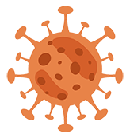
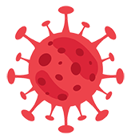
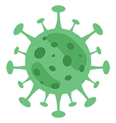

<ion-header class="ion-no-border">
  <ion-toolbar>

    <ion-buttons slot="start">
      <ion-menu-button color="custom"></ion-menu-button>

    </ion-buttons>


    <span slot="start" class="header-title">R2Z Tracker</span>
    <span slot="end" class="header-time">{{currentDate | date:'EEE, h:mm:ss a'}}
    </span>


    <ion-buttons slot="end">
      <ion-button class="bordered" (click)="presentAlert()">
        <span class="badge badge-danger"
          style="position: absolute; font-size: 55%; z-index: 2; border-radius: 25px; left: 9px; top: 4px;">1</span>
        <ion-icon color="custom" name="notifications"></ion-icon>
      </ion-button>
    </ion-buttons>
  </ion-toolbar>

</ion-header>


<div class="topcontainer" *ngFor="let data of city">
  <div class="topdesign">
    <div class="item">

      <div class="label1 py-3">
        <span style="color: #21b400; font-size: 6vw;">Olongapo City</span>
        <span style="color: #21b400; font-size: 4vw;">Covid-19 Cases Update</span>
      </div>

      <div class="label2 py-3">
        <p class="color">Active Cases</p>
        <h3>{{data.cactive_cases}}</h3>
      </div>
    </div>
    <div class="casescontainer">
      <div class="casescard1">
        
        <span style="color: #c35422;" class="casenumber">{{data.ctotal_cases}}</span>
        <span class="casetitle">Confirmed</span>
      </div>
      <div class="casescard2">
        
        <span style="color: #d72336;" class="casenumber">{{data.cdeath_cases}}</span>
        <span class="casetitle">Death</span>

      </div>
      <div class="casescard3">
        
        <span style="color: #479a53;" class="casenumber">{{data.crecovered_cases}}</span>
        <span class="casetitle">Recovered</span>

      </div>
    </div>
  </div>
</div>

<ion-content>

  <div class="mapcontainer">

    <div id="map"></div>


  </div>
  <ng-http-loader></ng-http-loader>


</ion-content>